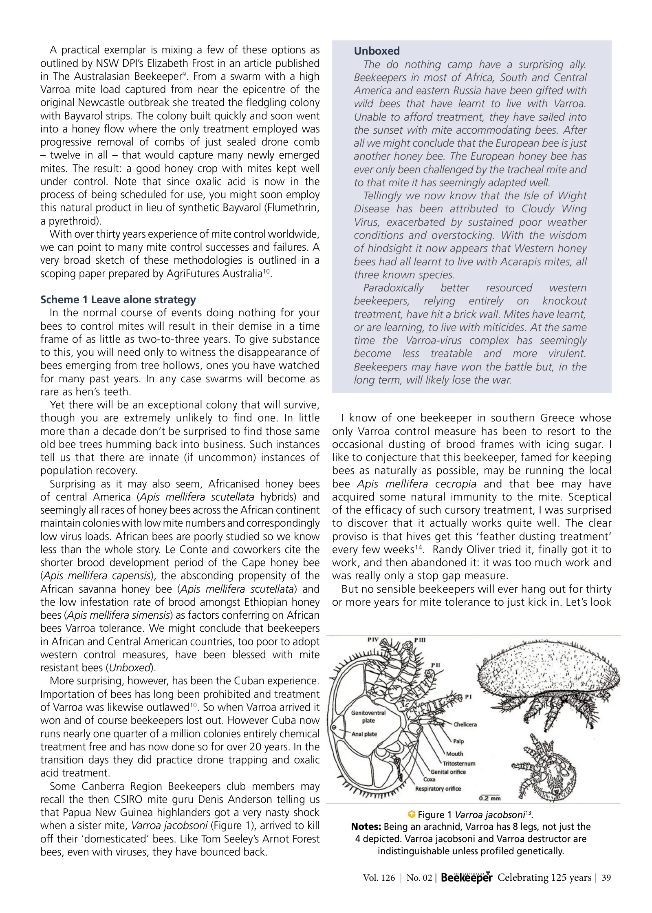

Figure 1 Varroa jacobsoni13.
Notes: Being an arachnid, Varroa has 8 legs, not just the
4 depicted. Varroa jacobsoni and Varroa destructor are
indistinguishable unless profiled genetically.
A practical exemplar is mixing a few of these options as
outlined by NSW DPI’s Elizabeth Frost in an article published
in The Australasian Beekeeper9. From a swarm with a high
Varroa mite load captured from near the epicentre of the
original Newcastle outbreak she treated the fledgling colony
with Bayvarol strips. The colony built quickly and soon went
into a honey flow where the only treatment employed was
progressive removal of combs of just sealed drone comb
– twelve in all – that would capture many newly emerged
mites. The result: a good honey crop with mites kept well
under control. Note that since oxalic acid is now in the
process of being scheduled for use, you might soon employ
this natural product in lieu of synthetic Bayvarol (Flumethrin,
a pyrethroid).
With over thirty years experience of mite control worldwide,
we can point to many mite control successes and failures. A
very broad sketch of these methodologies is outlined in a
scoping paper prepared by AgriFutures Australia10.
Scheme 1 Leave alone strategy
In the normal course of events doing nothing for your
bees to control mites will result in their demise in a time
frame of as little as two-to-three years. To give substance
to this, you will need only to witness the disappearance of
bees emerging from tree hollows, ones you have watched
for many past years. In any case swarms will become as
rare as hen’s teeth.
Yet there will be an exceptional colony that will survive,
though you are extremely unlikely to find one. In little
more than a decade don’t be surprised to find those same
old bee trees humming back into business. Such instances
tell us that there are innate (if uncommon) instances of
population recovery.
Surprising as it may also seem, Africanised honey bees
of central America (Apis mellifera scutellata hybrids) and
seemingly all races of honey bees across the African continent
maintain colonies with low mite numbers and correspondingly
low virus loads. African bees are poorly studied so we know
less than the whole story. Le Conte and coworkers cite the
shorter brood development period of the Cape honey bee
(Apis mellifera capensis), the absconding propensity of the
African savanna honey bee (Apis mellifera scutellata) and
the low infestation rate of brood amongst Ethiopian honey
bees (Apis mellifera simensis) as factors conferring on African
bees Varroa tolerance. We might conclude that beekeepers
in African and Central American countries, too poor to adopt
western control measures, have been blessed with mite
resistant bees (Unboxed).
More surprising, however, has been the Cuban experience.
Importation of bees has long been prohibited and treatment
of Varroa was likewise outlawed10. So when Varroa arrived it
won and of course beekeepers lost out. However Cuba now
runs nearly one quarter of a million colonies entirely chemical
treatment free and has now done so for over 20 years. In the
transition days they did practice drone trapping and oxalic
acid treatment.
Some Canberra Region Beekeepers club members may
recall the then CSIRO mite guru Denis Anderson telling us
that Papua New Guinea highlanders got a very nasty shock
when a sister mite, Varroa jacobsoni (Figure 1), arrived to kill
off their ‘domesticated’ bees. Like Tom Seeley’s Arnot Forest
bees, even with viruses, they have bounced back.
I know of one beekeeper in southern Greece whose
only Varroa control measure has been to resort to the
occasional dusting of brood frames with icing sugar. I
like to conjecture that this beekeeper, famed for keeping
bees as naturally as possible, may be running the local
bee Apis mellifera cecropia and that bee may have
acquired some natural immunity to the mite. Sceptical
of the efficacy of such cursory treatment, I was surprised
to discover that it actually works quite well. The clear
proviso is that hives get this ‘feather dusting treatment’
every few weeks14. Randy Oliver tried it, finally got it to
work, and then abandoned it: it was too much work and
was really only a stop gap measure.
But no sensible beekeepers will ever hang out for thirty
or more years for mite tolerance to just kick in. Let’s look
Unboxed
The do nothing camp have a surprising ally.
Beekeepers in most of Africa, South and Central
America and eastern Russia have been gifted with
wild bees that have learnt to live with Varroa.
Unable to afford treatment, they have sailed into
the sunset with mite accommodating bees. After
all we might conclude that the European bee is just
another honey bee. The European honey bee has
ever only been challenged by the tracheal mite and
to that mite it has seemingly adapted well.
Tellingly we now know that the Isle of Wight
Disease has been attributed to Cloudy Wing
Virus, exacerbated by sustained poor weather
conditions and overstocking. With the wisdom
of hindsight it now appears that Western honey
bees had all learnt to live with Acarapis mites, all
three known species.
Paradoxically
better
resourced
western
beekeepers,
relying
entirely
on
knockout
treatment, have hit a brick wall. Mites have learnt,
or are learning, to live with miticides. At the same
time the Varroa-virus complex has seemingly
become less treatable and more virulent.
Beekeepers may have won the battle but, in the
long term, will likely lose the war.
Vol. 126 | No. 02 |
Celebrating 125 years | 39